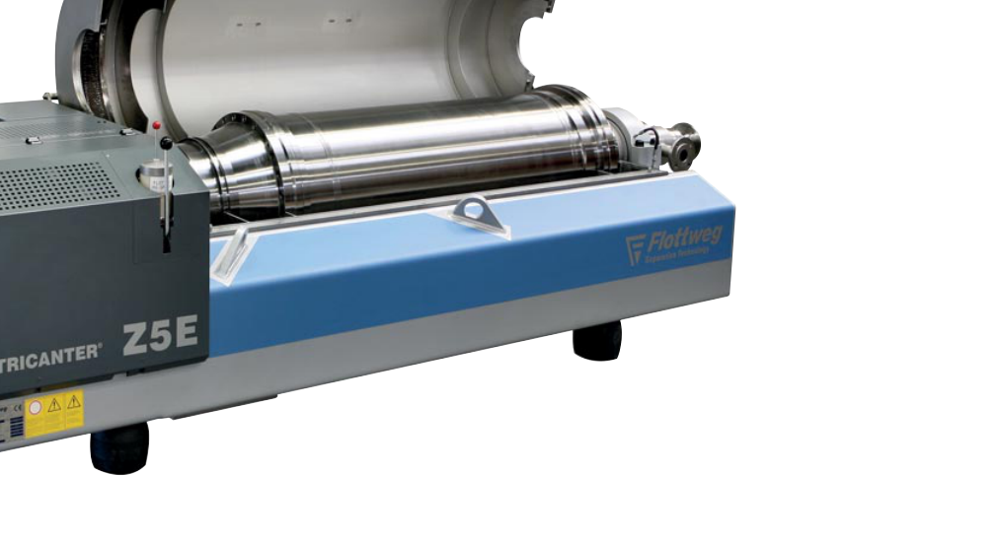

Aprende observando
¿Cuánto sabes
del Tricanter?
Reconoce sus componentes y comprende cómo funciona la separación centrífuga. Observa cada imagen, elige tu respuesta y recibe la corrección al instante.
20preguntas visuales
4alternativas

Versión inicial basada en el folleto Flottweg de 2013 para aceite de oliva. Evalúa principios y componentes; la capacitación operativa minera debe ajustarse al equipo y a los procedimientos de la faena.
Tu primera elección queda registrada. Puedes volver a las preguntas para revisar la corrección antes de finalizar.
Cuestionario completado
Revisa tus respuestas
Abre cada pregunta para ver tu elección, la respuesta correcta y la explicación.